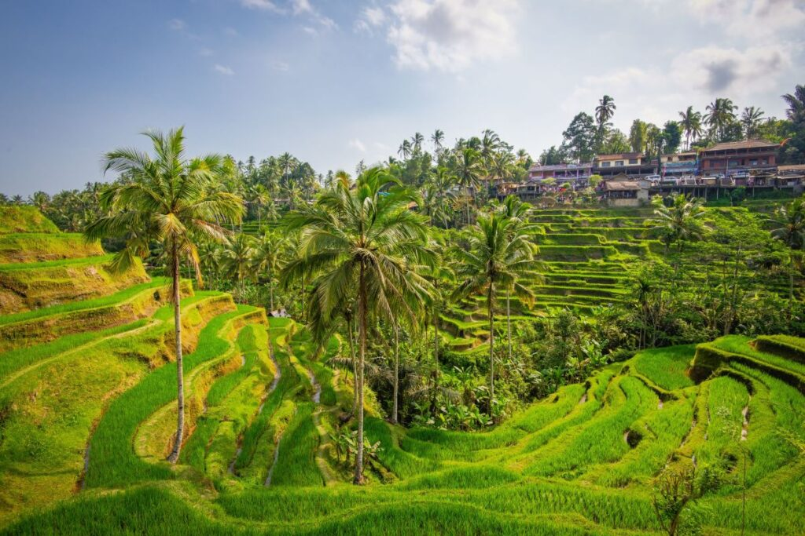
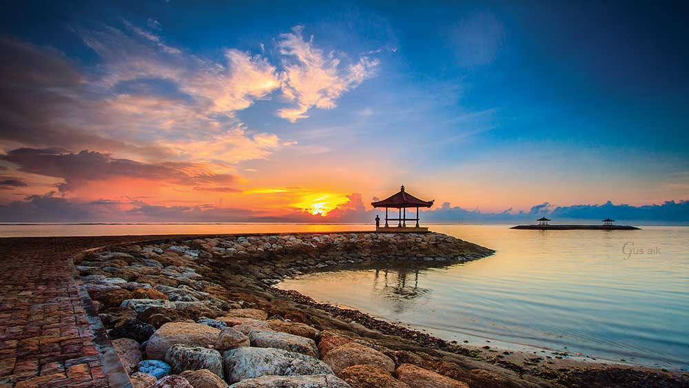
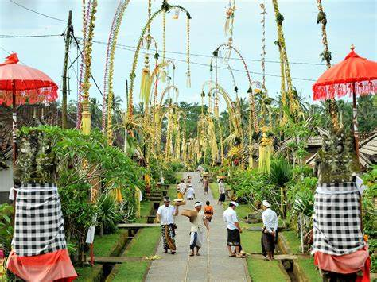

Bali is a province of the Republic of Indonesia located between the island of Java and the island of Lombok, the island of Bali is also known as the ISLAND OF THE GODS. BALI has thousands of great places that must be visited.
Some people may consider a vacation to Bali to be quite a mainstream thing aka ordinary. However, do you know why Bali is always interesting to visit? Here are some reasons why you should go to Bali to spend your vacation.
Nusa Penida adalah sebuah pulau (=nusa) bagian dari negara Republik Indonesia yang terletak di sebelah tenggara Bali yang dipisahkan oleh Selat Badung. Di dekat pulau ini terdapat juga pulau-pulau kecil lainnya yaitu Nusa Ceningan dan Nusa Lembongan.
Danau Beratan Bedugul adalah danau terluas dan terbesar kedua setelah Danau Batur. Danau ini menjadi sangat mainstream karena ada di uang kertas pecahan Rp 50.000. Selain itu, juga pernah dinobatkan menjadi salah satu dari 20 danau terbaik di dunia.
Pantai Sanur adalah salah satu pantai wisata yang ada di pulau Bali. Pantai ini terletak persis di sebelah timur kota Denpasar, Bali. Sanur berada di Kotamadya Denpasar. Karena memiliki ombak yang cukup tenang, maka pantai Sanur tidak bisa dipakai untuk selancar layaknya Pantai Kuta.